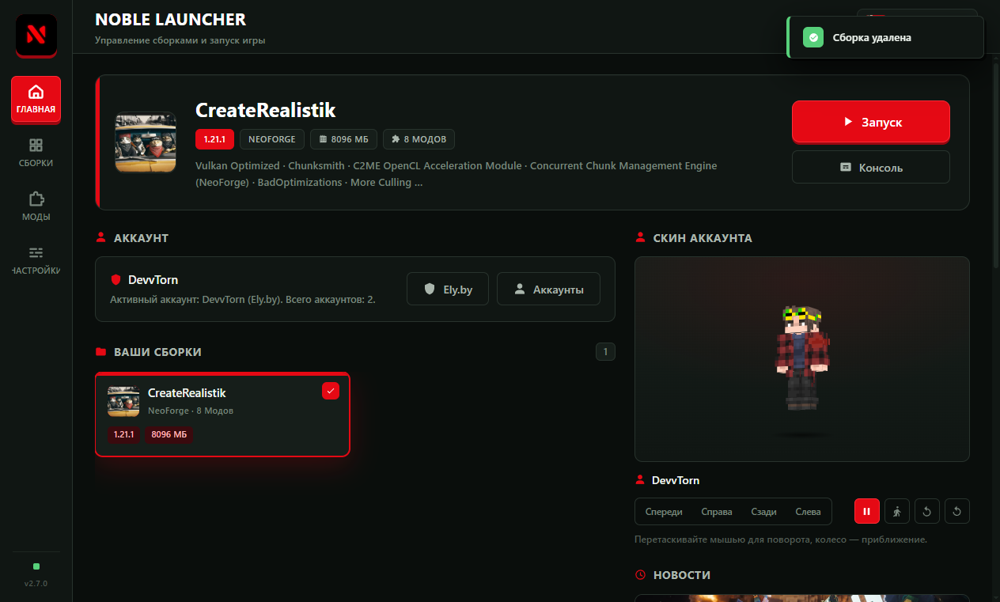
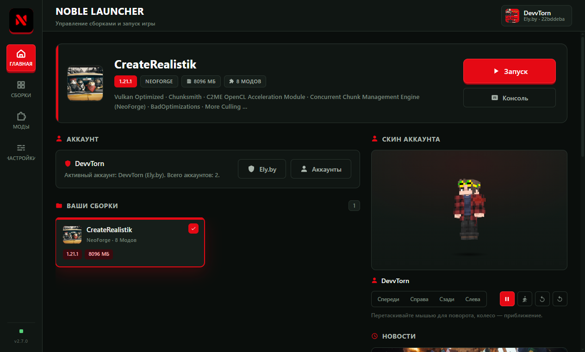
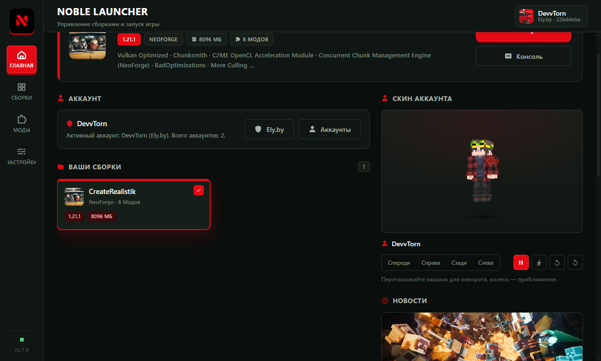
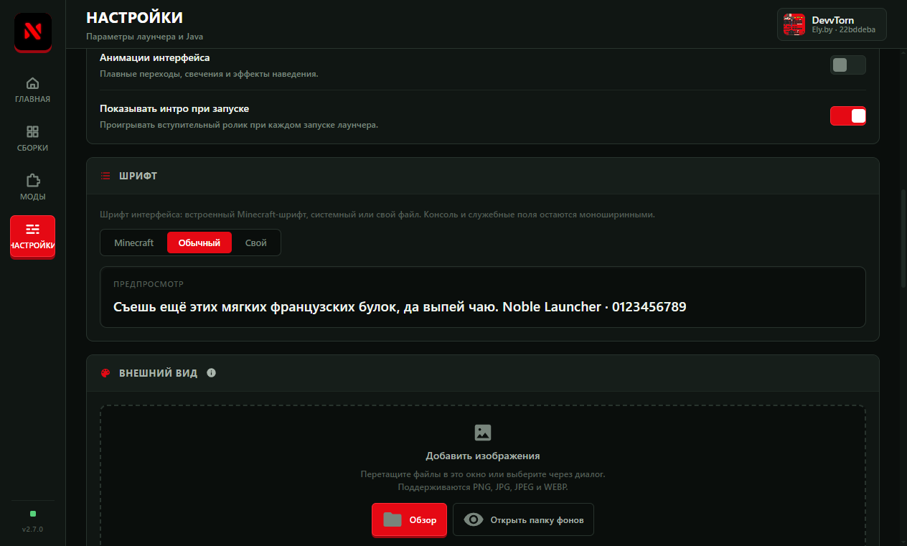
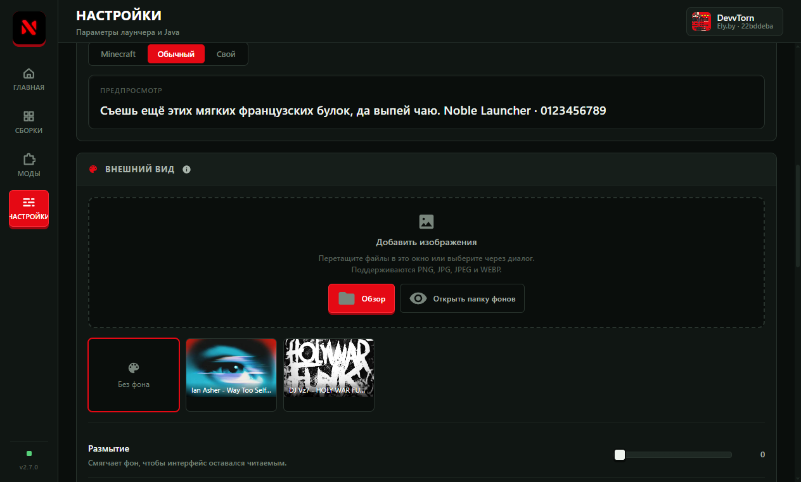
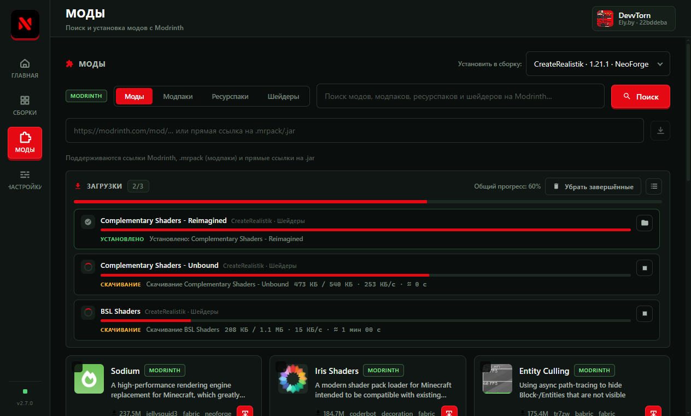
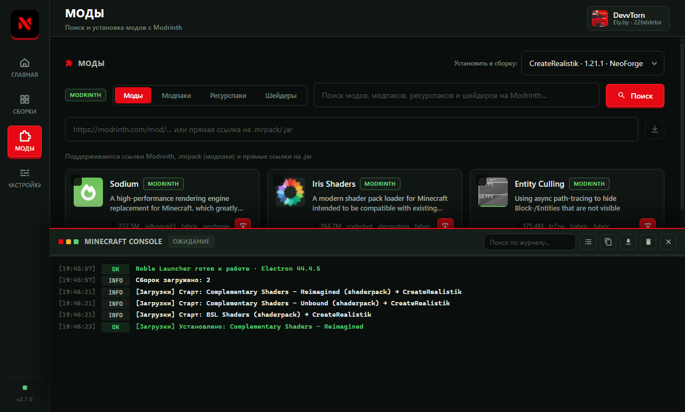

3D-просмотр скина
Модель игрока с анимациями «покой», «ходьба» и «вращение»: поворачивайте мышью, приближайте колесом.
Minecraft · Windows
Бесплатный и удобный лаунчер на ПК: сборки, моды с Modrinth, 3D-скины, свои фоны и выбор шрифта — в одном окне. Без входа через Microsoft.
Ely.by по логину и паролю или офлайн-аккаунт. Установка в один клик, данные — на вашем диске.
Windows 10/11 x64 · 109,5 МБ · версия 2.8.0 · установка без прав администратора*

Возможности
Ничего лишнего: лаунчер делает свою работу и не мешает. Подробнее — на странице «Возможности».
Модель игрока с анимациями «покой», «ходьба» и «вращение»: поворачивайте мышью, приближайте колесом.
GPU, Game Mode, план питания и приоритет процесса — только обратимые настройки с точкой отката.
Любое изображение фоном с размытием и затемнением; шрифт интерфейса — встроенный, системный или свой файл.
Вход через Ely.by (по паролю или через браузер) либо офлайн-профиль. Никаких лишних аккаунтов.
Сборки и общие файлы игры переносятся на любой диск с прогрессом и отменой — системный диск не переполняется.
Поиск модов, ресурспаков и шейдеров, установка с зависимостями и очередью загрузок, поддержка .mrpack.
Установленная версия обновляется сама; анонсы версий — в Telegram-канале @noblelauncher.
Запуск превращается в «Остановить» на том же месте: мягкое завершение игры и приоритет — под контролем.
Как это выглядит
Интерфейс, оптимизация, очередь загрузок, консоль и настройки шрифта.






Скачать
Установщик сам создаст ярлык «NobleLauncher», а папку установки можно выбрать на любом диске.
Анонсы версий, исправления и новости — в Telegram-канале.